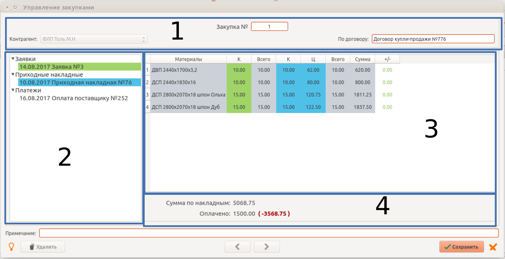

Для каждого этапа оформления закупочной сделки в программе предусмотрен самостоятельные функции:
“Управление закупками” дает возможность собирать разные документы по конкретной сделке в одну “папку”, осуществлять количественный контроль поступившего товара и отслеживать задолженность.
Функция находится в ветке “Склад”.
Для создания нового документа выберите раздел учета (Материалы или Товары) и нажмите новый документ. В реквизитах обязательно нужно указать поставщика. Поле договор не обязательное, здесь можно указать номер или реквизиты договора купли-продажи на основе которого выполняется сделка.
Окно “Управления закупками” разделено на несколько блоков:
Здесь можно изменить контрагента или вписать нормер договора. После добавления хотя бы одного документа, контрагента изменить будет нельзя.
Здесь отображаются присоединенные документы. Документы количественного учета имеют свой цвет. Таким же цветом выделены колонки соотвествующего документа в таблице товаров.
Таблица отображает состав припрепленных документов, итоговые значения и разницу, показывает полноту выполнения заказа по каждой позиции.
Чтобы присоединить документы нужно в блоке документов вызвать контекстное меню и нажать соответствующую функцию. Таким же образом, можно убрать документ из папки или открыть его для детального просмотра и редактирования.